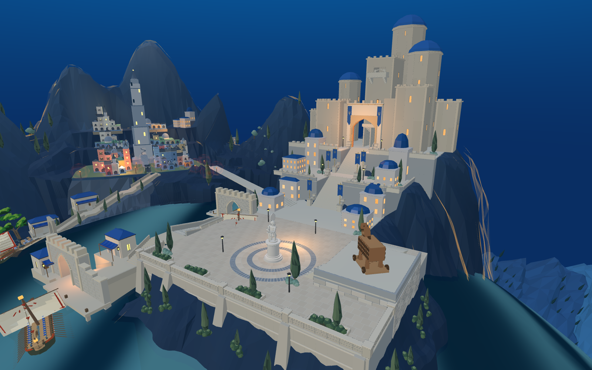
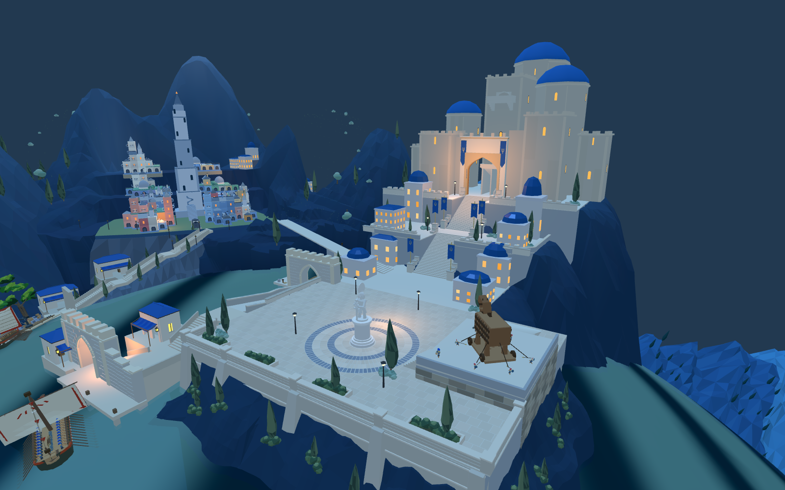

三座蓝顶塔加宽、降低，保留错落天际线与原中央楼梯塔。窗洞由现有WFC立面求解器重新生成。整体仍未达到目标。
| 塔楼 | 塔身宽度 | 塔身高度（不含圆顶） |
|---|---|---|
| 左侧蓝塔 | 6.8 → 8.2米 | 19.8 → 18米 |
| 右侧蓝塔 | 8.8 → 10.4米 | 27 → 24米 |
| 后方主塔 | 9.8 → 12.4米 | 36.4 → 30.4米 |



16处真实窗洞检测 · 网页通路检查 · 原士兵行军 · 进入原游戏
本轮仅校正塔群体量。当前WFC覆盖七组正立面，塔群整体体量为目标引导的人工参数，不能称为完整Townscaper构建算法复刻。主堡下方岩台、植被、光照、前港密度及完整攻城仍需继续。